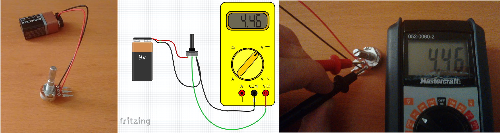
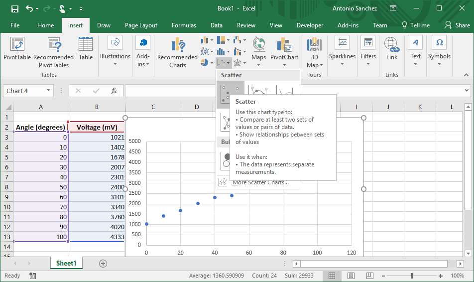
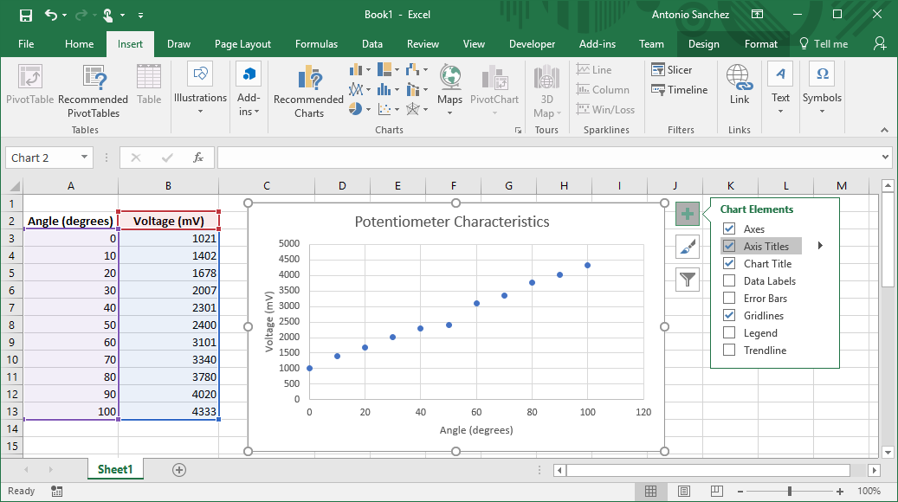
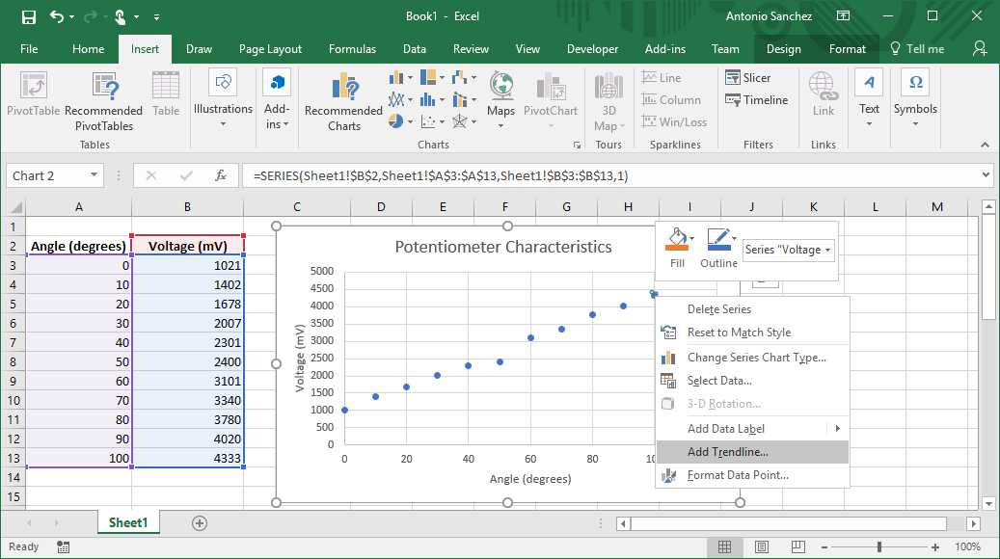
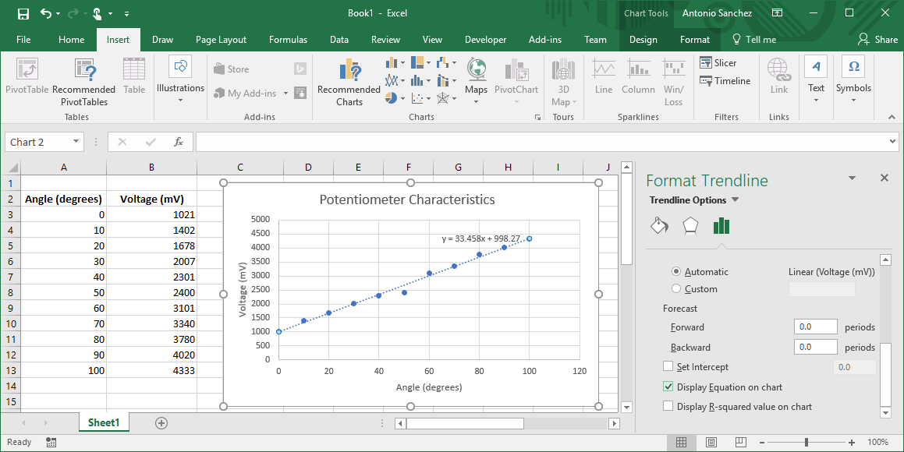
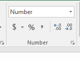

Excel Tutorial: Plotting and Computing with Excel
- Intro
- Plotting
- Computing
- Solution
In this tutorial, we will go through some of the basics of plotting data in excel, computing a trendline to find a relationship between input and output values, and using formulas to compute new information from our data.
Note: in this practice problem we introduce some information about electronics, but you are not expected to know or learn these details for this course. They are there to simply give our problem some context. If you wish, you can ignore these details and just treat the data as given.
The Problem
A rotary potentiometer is an electrical component with three terminals and a knob that can rotate. It acts as a voltage divider, splitting the voltage applied to the two end terminals based on the rotation angle of the knob. The greater the angle of rotation, the greater the voltage. For example, if a 9V battery is attached to the potentiometer and the knob is turned about half-way, then the output voltage at the middle terminal will be about 4.5V.
Potentiometers are used in almost every kind of knob, dial, or slider you can think of: volume controls, stove-top temperature dials, light dimmers, and even gamepad controllers.
Let's say you wish to create a physical volume controller to attach to your computer. You buy a potentiometer and attach a 9V battery to the endpoints. To create our volume controller, we need to relate the rotation angle of the dial to the output voltage of the potentiometer. To do this, we will collect some data and compute a relationship between the two.
| Angle (degrees) | Voltage (mV) |
|---|---|
| 0.0 | 1021 |
| 10.0 | 1402 |
| 20.0 | 1678 |
| 30.0 | 2007 |
| 50.0 | 2301 |
| 40.0 | 2400 |
| 60.0 | 3101 |
| 70.0 | 3340 |
| 80.0 | 3780 |
| 90.0 | 4020 |
| 100.0 | 4333 |
We will plot the voltage as a function of rotation angle to determine a relationship that describes the potentiometer's voltage characteristics.
- Enter the data into Excel, Numbers, Google Spreadsheets, or similar program
- Plot the data as a Scatter Plot
In Excel, you can do this by selecting all the data, navigating to the tab, and selecting the appropriate chart type in the Chart toolbar.  - Modify the chart to add an appropriate title and axis labels
In Excel, you can do this by clicking on the + icon next to the chart  - Add a trend-line to the plot and display the equation.
In Excel, right-click on a the data points and select .  Scroll down to the button of the settings, and select the checkbox that says  We now have an estimate of the angle-voltage relationship of the device.
| Voltage (mV) | Angle (degrees) |
|---|---|
| 3333 | |
| 3219 | |
| 1109 | |
| 5987 | |
| 4572 | |
| 2098 | |
| 1087 | |
| 7783 | |
| 1876 | |
| 2381 |
If you are not familiar with formulas in Excel, check out the documentation here or watch the class videos. Limit the computed angle results to two decimal places. In Excel, you can change the precision by selecting the values, navigating to the menu and using the increase/decrease decimal buttons on the toolbar.

Finally, we want our volume controller to set the volume equal to the rotation angle, up to
a maximum of 100 (since your computer cannot set the volume above 100%). Add a new column to compute a volume from the angle.
In Excel, you can use the method
MIN(a,b) for this. For example, we should get the following results for angle and volume:
| Voltage (mV) | Angle (degrees) | Volume (%) |
|---|---|---|
| 3333 | 69.78 | 69.78 |
| 5987 | 149.10 | 100.00 |
| 4572 | 106.81 | 100.00 |
Download the following excel file to see the final solution: tutorial_solution.xls
From the trendline, you should have computed the relationship $$\mathrm{angle} = \frac{\mathrm{voltage} - 998.27}{33.46}.$$ The final voltage-angle-volume table should look as follows:| Voltage (mV) | Angle (degrees) | Volume (%) |
|---|---|---|
| 3333 | 69.78 | 69.78 |
| 3219 | 66.37 | 66.37 |
| 1109 | 3.31 | 3.31 |
| 5987 | 149.10 | 100.00 |
| 4572 | 106.81 | 100.00 |
| 2098 | 32.87 | 32.87 |
| 1087 | 2.65 | 2.65 |
| 7783 | 202.78 | 100.00 |
| 1876 | 26.23 | 26.23 |
| 2381 | 41.33 | 41.33 |